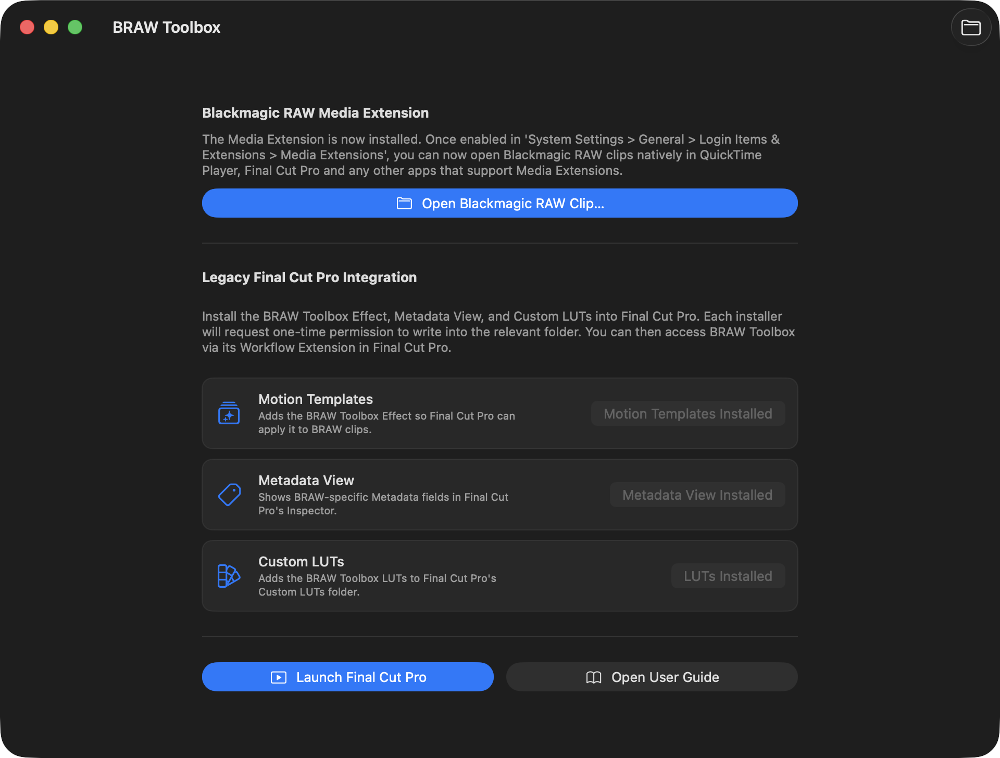
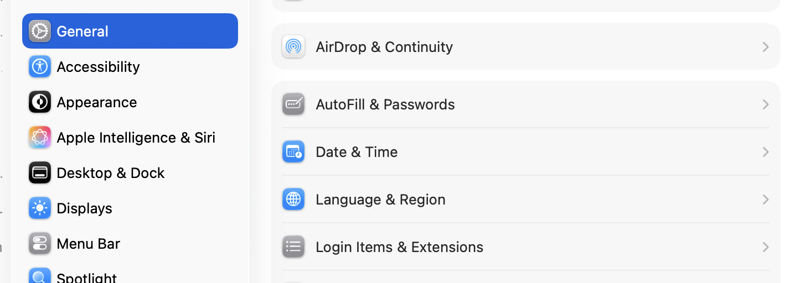
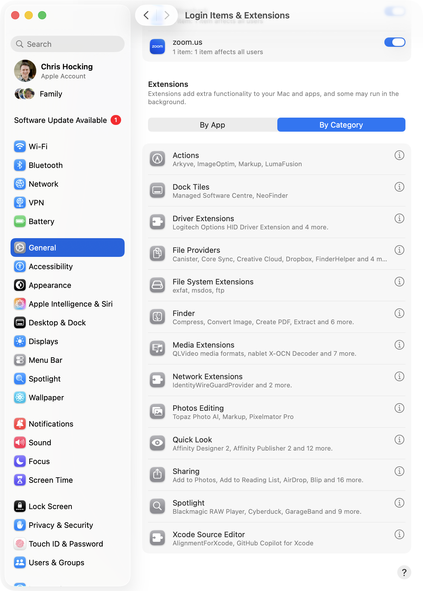
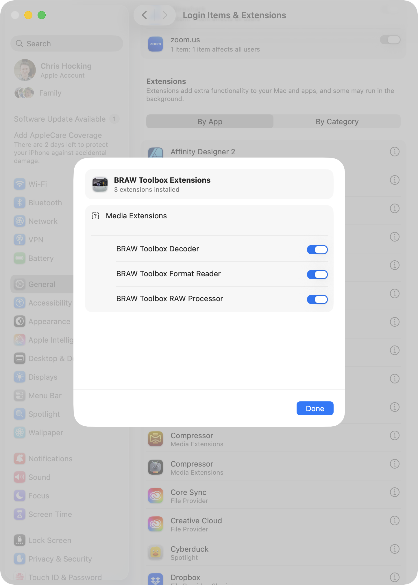
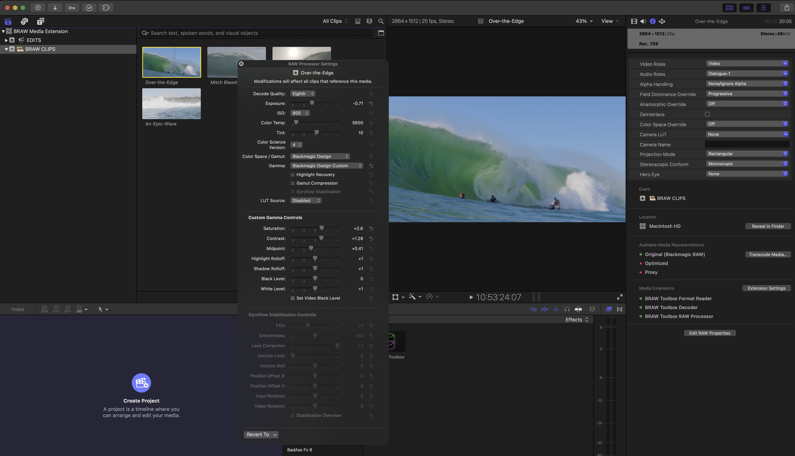
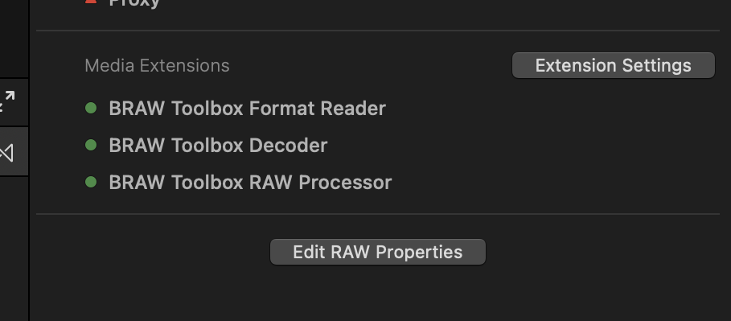
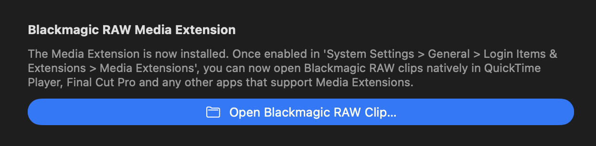
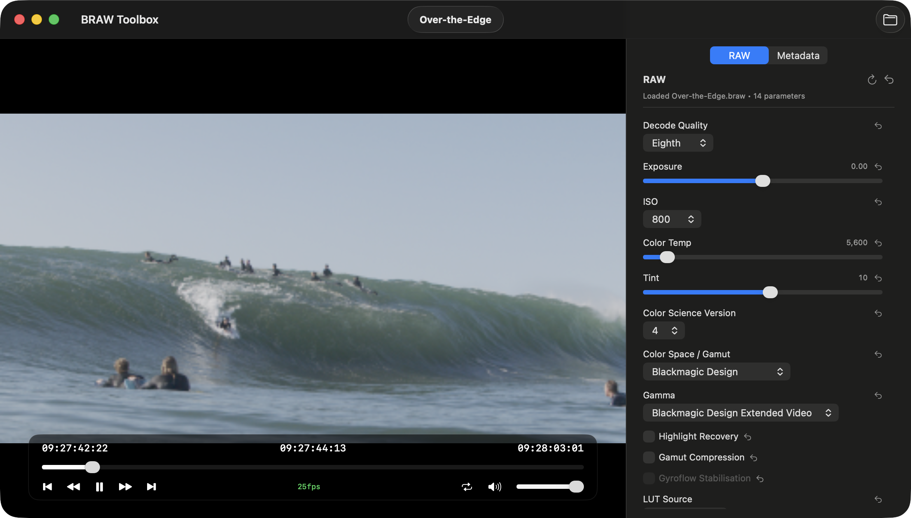

Media Extension
BRAW Toolbox v3.0.0 contains a Media Extension allowing you to play back BRAW in QuickTime Player, Final Cut Pro and any other macOS applications that support Media Extensions.

Installation
When you first install BRAW Toolbox v3.0.0 or later, the Media Extensions are off by default - you need to enable them in System Settings.
Open System Settings then in the General tab, select Login Items & Extensions.

Scroll all the way down to Extensions, select By Category then Media Extensions

You should then enable the three BRAW Toolbox Media Extensions:

Once enabled, you can import Blackmagic RAW files natively into Final Cut Pro, with full RAW controls.

You can find the RAW controls at the bottom of the Metadata Inspector with the Edit RAW Properties button.

Blackmagic RAW Player
The BRAW Toolbox application also has a built-in Blackmagic RAW player for testing the Media Extension.
When you launch BRAW Toolbox from your /Applications folder, click Open Blackmagic RAW Clip....

You then have a player with full RAW controls and full metadata viewing:

Media Extension vs Legacy
The main advantage of the Media Extension is that once installed, you can just drag a .braw into Final Cut Pro, and it works exactly the same as a .mov.
You can create Proxies, you can Create Optimised Media, it works just like a regular clip in Final Cut Pro.
You can easily just export a FCPXML to DaVinci Resolve without any processing.
You also get full Gyroflow control built-in to the Media Extension!
The downside is that you loose RAW key-framing, and you loose ability to have RAW presets.
In terms of performance, they're equivalent. Neither will be as fast as DaVinci Resolve, and both have their workarounds and quirks.
If you just want to convert .braw to something else, then EditReady or DaVinci Resolve will be faster.